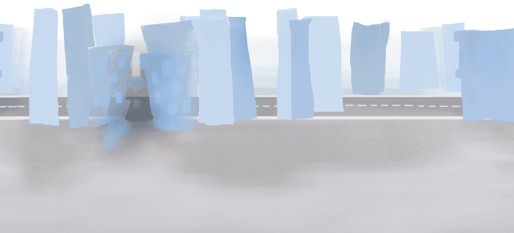
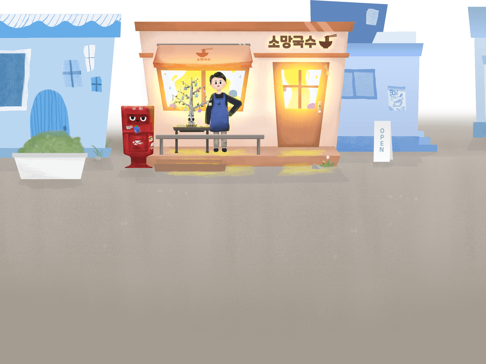
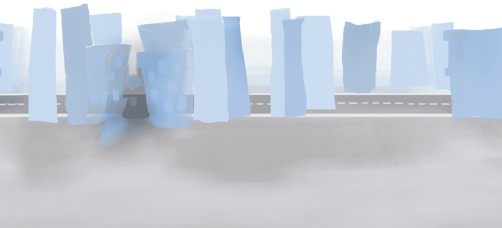
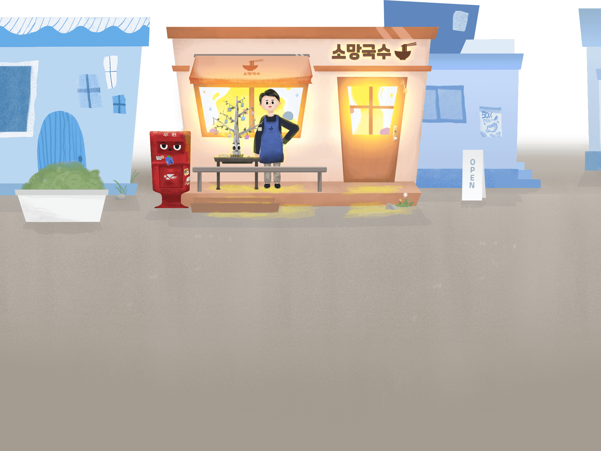
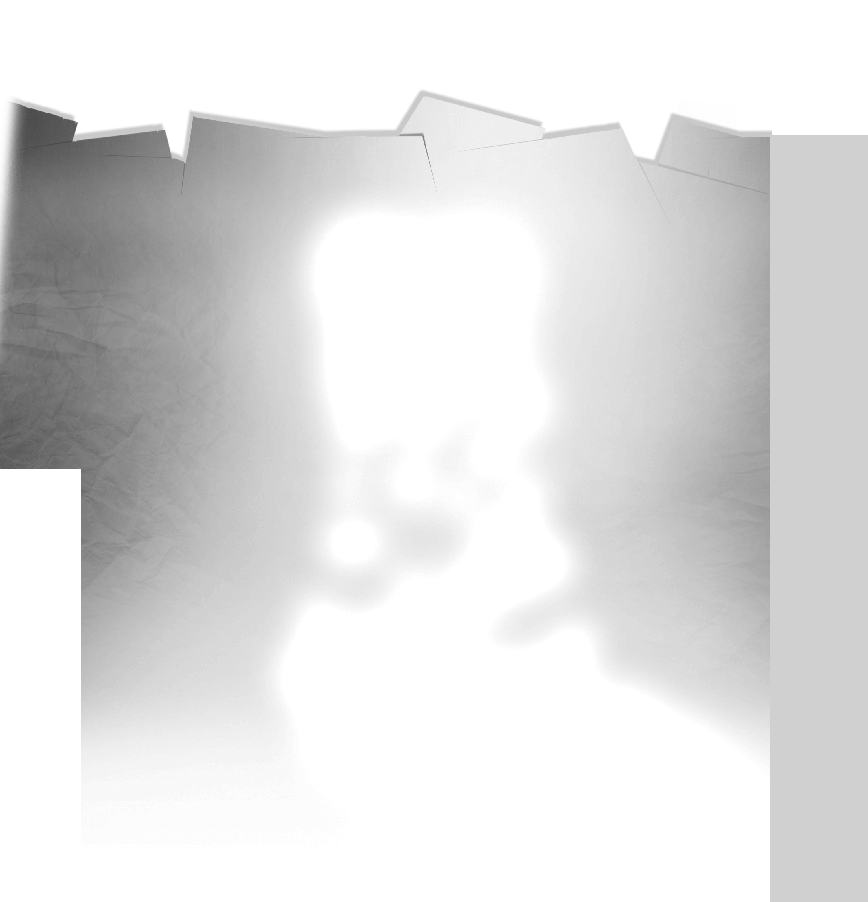
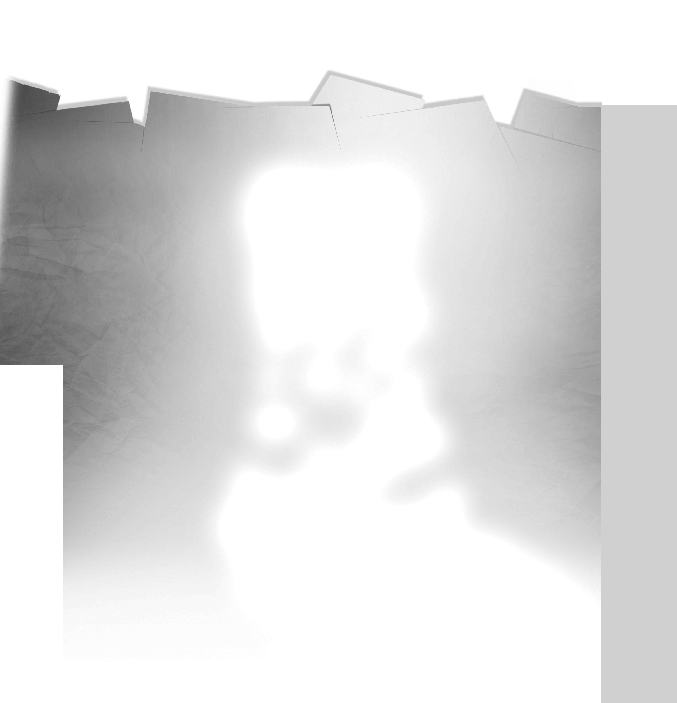

크롬 브라우저와 전체화면 사용을 권장합니다

 





 

아직 사람이 많이 오가지 않는 이른 아침의 상가 거리. 따듯한 햇살 아래 소망국수의 사장은 택배를 조심스럽게 열어 차갑게 굳어 있는 인조나무를 꺼낸다. 나무와 함께 다양한 색의 종이, 펜을 탁자에 조심스레 올려놓는다.
사장은 한 발 물러서서 중얼거린다. “손님들이 소망을 많이 써주시겠지? 할머니가 전해주셨던 따듯한 마음을 잊지 말아야지.” 사장은 따듯했던 국수 한 그릇과 국수보다 더 따듯했던 할머니의 보살핌을 떠올린다. 나무 한편에 첫 번째 소망을 적어 단다. 나무가 깨어난다. 자신에게 달린 소망을 발견한다.잊고 있었던 소망들을 떠오르게 하는 소소하고 따듯한 국수가게가 되고 싶다.


저희 소망국수는 손님의 마음에 담긴 소망들을 항상 응원하고 있습니다.
손님의 소망은 무엇인가요?


 또 하나의 소망이 나무에 걸린다. 소망나무가 새로운 소망을 바라보며 활짝 미소짓는다. 우체통이 묻는다.
“소망이 걸리는 게 그렇게 좋아?”
소망나무가 말한다.
“응! 사람들은 따듯한 소망으로 나를 의미 있게 해. 내가 공장에서 본 사람들은 모두 차가웠는데 이곳은 달라. 소망이 하나 걸릴 때마다 내가 축복받았다는 생각이 들어. 이렇게 따듯한 사람들에게 필요한 존재가 되어 살아갈 수 있다는 게 말이야.”
또 하나의 소망이 나무에 걸린다. 소망나무가 새로운 소망을 바라보며 활짝 미소짓는다. 우체통이 묻는다.
“소망이 걸리는 게 그렇게 좋아?”
소망나무가 말한다.
“응! 사람들은 따듯한 소망으로 나를 의미 있게 해. 내가 공장에서 본 사람들은 모두 차가웠는데 이곳은 달라. 소망이 하나 걸릴 때마다 내가 축복받았다는 생각이 들어. 이렇게 따듯한 사람들에게 필요한 존재가 되어 살아갈 수 있다는 게 말이야.”
 소망나무의 이야기를 듣는 우체통의 표정이 점점 어두워진다. 우체통이 차분하게 입을 뗀다.
“소망나무야. 이곳의 사람들을 너무 믿기만 해선 안 돼. 전엔 내 안에도 편지들이 가득했고, 그때까지만 해도 난 소중한 존재였어. 내 안에 소중히 준비해온 편지를 넣으며 활짝 웃던 아이도 있었어. 그 아이가 나를 보며 짓던 웃음은 아직도 내 기억 속에 생생한데, 지금의 나를 봐. 이제 아이들은 내가 왜 존재하는지도 몰라. 내 몸엔 장난삼아 그려진 낙서와 스티커들이 가득해. 옆면의 철거 안내문이 보이니? 결국 사람들은 자신에게 필요가 없으면 널 버리고 말거야. 네가 경험했던 공장의 차가운 사람들도, 지금 웃으며 따듯한 말을 해대는 이 사람들도 결국엔 똑같은 거야. 처음의 따듯한 모습은 그냥 일부야. 믿으면 안 돼.
소망나무의 이야기를 듣는 우체통의 표정이 점점 어두워진다. 우체통이 차분하게 입을 뗀다.
“소망나무야. 이곳의 사람들을 너무 믿기만 해선 안 돼. 전엔 내 안에도 편지들이 가득했고, 그때까지만 해도 난 소중한 존재였어. 내 안에 소중히 준비해온 편지를 넣으며 활짝 웃던 아이도 있었어. 그 아이가 나를 보며 짓던 웃음은 아직도 내 기억 속에 생생한데, 지금의 나를 봐. 이제 아이들은 내가 왜 존재하는지도 몰라. 내 몸엔 장난삼아 그려진 낙서와 스티커들이 가득해. 옆면의 철거 안내문이 보이니? 결국 사람들은 자신에게 필요가 없으면 널 버리고 말거야. 네가 경험했던 공장의 차가운 사람들도, 지금 웃으며 따듯한 말을 해대는 이 사람들도 결국엔 똑같은 거야. 처음의 따듯한 모습은 그냥 일부야. 믿으면 안 돼.

 우체통이 괴로운 표정으로 말한다.
“내 안에 들어있던 편지들이 다 불타버린 적이 있어.”
우체통은 아픈 기억을 되짚는다. 유난히 어둡고 공기가 바싹 마른 날이었다. 으슥한 골목, 담배 연기가 퍼져나오고 있었다.
빨간 불빛을 단 담배꽁초는 꺼지지 않은 채 우체통의 입구를 헤집고 들어왔다. 어딘가 익숙한 손이었다. 우체통은 고개를 들었다. 그 아이였다. 좀 더 자란 모습이었지만 한눈에 알아볼 수 있었다. 담배 연기로 우체통이 차올랐다. 퇴근하던 국수 가게 할머니의 신고로 우체통이 열렸을 땐 소중한 편지들이 모두 잿더미가 되어버린 후였다.
우체통이 괴로운 표정으로 말한다.
“내 안에 들어있던 편지들이 다 불타버린 적이 있어.”
우체통은 아픈 기억을 되짚는다. 유난히 어둡고 공기가 바싹 마른 날이었다. 으슥한 골목, 담배 연기가 퍼져나오고 있었다.
빨간 불빛을 단 담배꽁초는 꺼지지 않은 채 우체통의 입구를 헤집고 들어왔다. 어딘가 익숙한 손이었다. 우체통은 고개를 들었다. 그 아이였다. 좀 더 자란 모습이었지만 한눈에 알아볼 수 있었다. 담배 연기로 우체통이 차올랐다. 퇴근하던 국수 가게 할머니의 신고로 우체통이 열렸을 땐 소중한 편지들이 모두 잿더미가 되어버린 후였다.
소망나무가 마음 아파하며 가지를 떨고 있다. 우체통이 다시 말을 시작한다.
“소망나무야. 사람들을 사랑했던 나는 너무도 아팠어. 나와 닮은 네가 그렇게 아프지 않길 바라. 나는 그 애를 진심으로 좋아했어. 앳된 손으로 편지를 써넣던, 미소 가득한 아이. 그 애의 편지에 담겨있던 깊고 따듯한 마음이 난 너무도 좋았는데. 오랜만에 교복을 입고 찾아온 그 애가 나에게 던진 건 전의 따듯한 손길이 아닌 빨간 불씨뿐이었어. 너는 소망국수의 사장을 믿지? 나에게 담배를 집어넣은 그 애가 네가 사랑하고 굳게 믿는 지금의 소망국수 사장이야.” 우체통이 타오르는 편지들에 좌절하는 동안, 학생은 그곳에 한참이나 멍하니 서 있었다. 한치의 미동도 없는 듯 보였지만 온몸을 잘게 떨고 있었다. 할머니는 아이를 안쓰럽게 바라보다 가게 안으로 데리고 들어갔다. 따듯한 국수 한 그릇이 학생 앞에 놓였다. 학생은 국수에서 피어오르는 김이 우체통에서 뿜어져 나왔던 아픈 열기와 사뭇 다르다는 생각을 했다. 향할 곳이 없었다. 할머니의 국수는 너무도 따듯했다.


우체통 사라지지 안앗으면 조켓다.
소망국수 사장은 아이에게 왜 그렇게 생각하냐고 묻는다. 아이가 울상이 되어 말한다. “없어지는 건 슬프잖아요! 오늘 선생님한테 제 거 장난감 뺏겼는데 너무 슬펐어요. 있던 게 이제 나한테 없는 거니까 믿기가 싫어요.”
우체통 사라지지 안앗으면 조켓다.
햇살이 빛난다. 소망나무는 자신에게 달린 소망들을 다시 들여다본다. 차양의 그림자 사이로 내려온 빛이 부드럽게 소망나무를 감싸고 있다. 까맣게 번져 한기가 돌았던 소망이 빛을 받아 다양한 색깔로 아름답게 빛난다. 다만 그림자가 진 부분에는 여전히 검은 소망들이 한기를 내뿜으며 서로 얽혀 있다. 소망나무는 사장과 우체통을 바라보며 생각에 잠긴다.